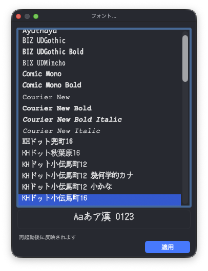
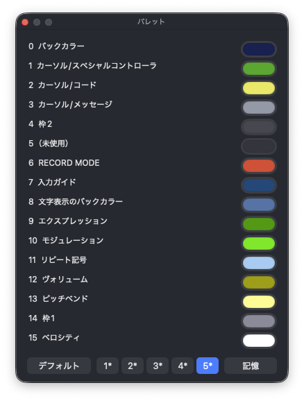
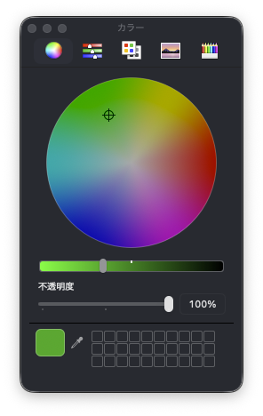
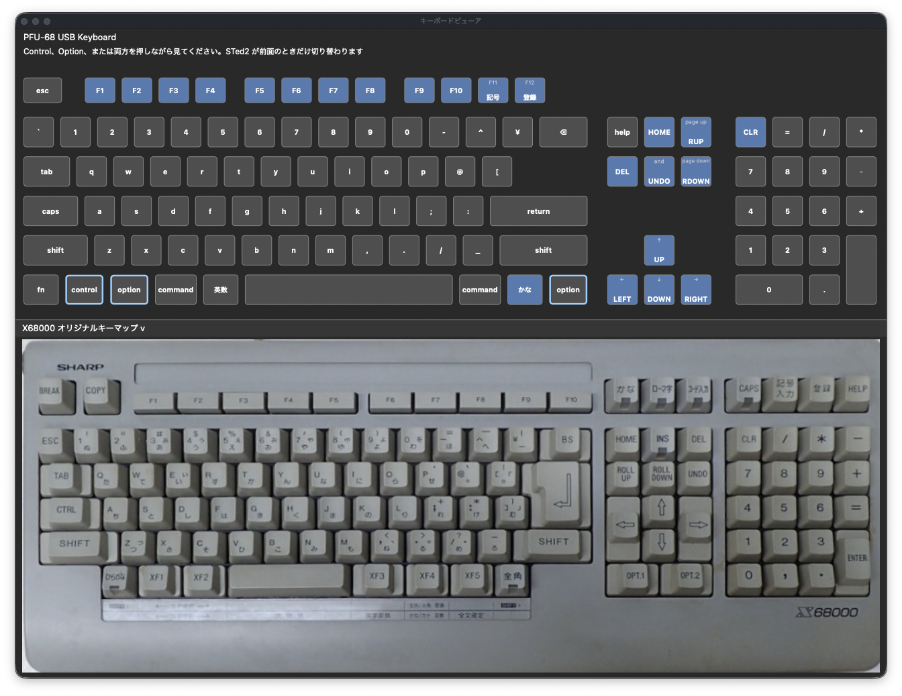
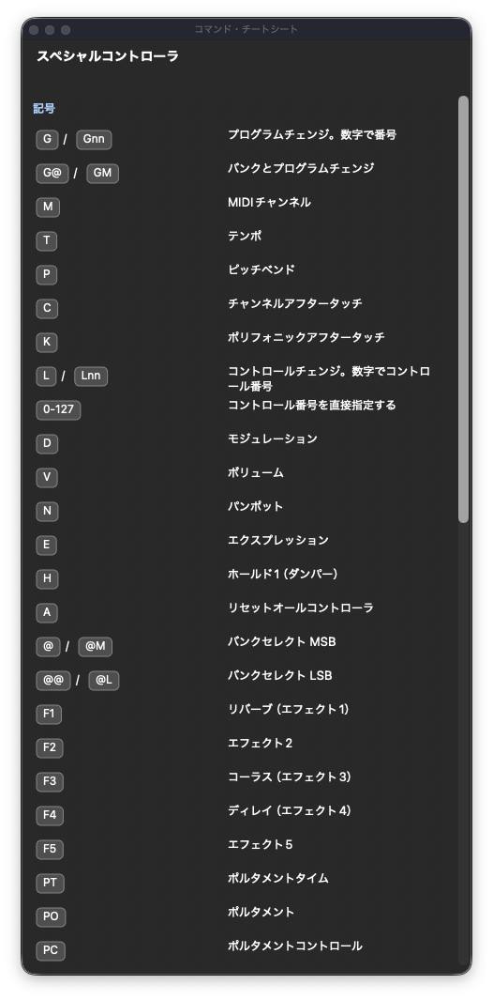
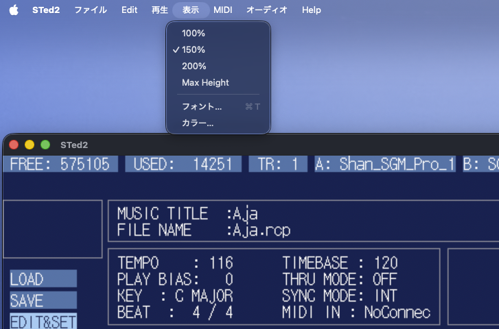

STed2 plus 独自の機能
- フォントの交換とフォントパネルの設置を行いました。デフォルトフォントはX68000とゆかりのあるKHドット小伝馬町16でアプリバンドル内ににTTFファイルの形で内蔵しています。
起動時にmacOSシステムに存在しなければシステムにフォントインストールした上で利用します。気に入らなければ他の等幅フォントに交換可能です

- カラーパネルを追加しました。macOS標準部品のパネルを呼び出して16色をその場でSTed画面に反映しながら調整可能で、結果だけをsted2.cnfへ書き出します。
5つの設定をPreferenceに記憶します。STedの伝統の配色はデフォルトとして別に持っています


- キーボードビューアウィンドウを設置しました。x68000キーボードをエミュレートするため、macOSのキーボードには存在しないキーを代替キーとしてsted2.cnfの #key_ フィールドで定義しているのですが、その設定内容をビジュアル的に表示します。macのControl/Optionを押すと対応した表示に色とキートップ文字が変わります

- コマンド・チートシートウィンドウを設置しました。膨大なSTedのキーボードショートカットを必要な分だけそのページ毎とスペシャルコントロール入力時に表示しますので、リファレンスを開き直す必要がなくなります

- 画面解像度の伸長、macOSのNSViewのスケーリング倍率を変更して画面を拡大可能にしています。なお拡大率に応じて画面補間アルゴリズムを適切に選択していますので、
画面のにじみを極力押さえ込んでいます

- マウススクロールイベントに対応しています（Macのタッチパッドの二本指スクロール、マウスのスクロールホイール）。現在UP/DOWNキーコードに偽装していますので、EDIT画面とメインのファンクション選択時、音色リスト選択時ににこのアクションが使えます
- ファイルインポート・エクスポートに、RCP、R36、MID の入出力に加えて、レコンポーザー95/98ファイルのG36、G18の入力と ABC形式楽譜トークンの入出力に対応しました。
G36/G18インポートは、X68000版のファイルコンバーター GtoR を移植してSTed2に内蔵したものです。G36の拡張フォーマットをR36の範囲内に縮小コンバートする仕様で、最大36トラック、最大タイムベース480に収めて運用しますので注意ください。
ABC形式は音楽生成AIのYuE2やmusic21ライブラリなどで広く使用されているだけでなく、誰もが手にできる汎用生成AI(Gemini,ChatGPT,Grok)などに作曲を依頼すると生成できる形式で、AIの出力をテキストファイルにして、.abcの拡張子をつけると読み込みが可能です。マルチトラック、GM形式の音色マップ付きのスコアを出力できます。
目次へ戻る